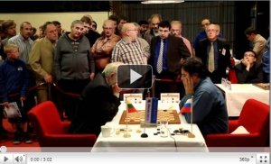
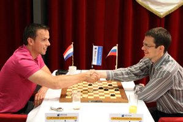
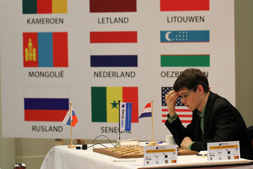
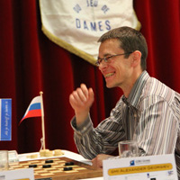

Финальный раунд был нервным боем
Paul Oudshoorn, 29-05-2011.
Финальный раунд Чемпионата мира - это было всё, кроме формальности. За оставшиеся места подиума было полное сражение. Ожидалось, что, особенно, борьба за третье место будет интересной, потому что Schwarzman должен был играть против Boezjinski, он хотел получить два очка.
Schwarzman сыграл свою последнюю игру, как действующий чемпион и сделал это в стиле. Это был чрезвычайно оригинальный бой, в котором он использовал оригинальные и тонкие стратегии с литовцем, кто боролся за то, чего он стоит. Первоклассная игра Schwarzman разорвала свою защиту, и было трудно в эндшпиле на доске. Schwarzman может его выиграть несколько раз, но даже он не смог найти правильный путь. Boezjinski в конечном итоге достиг с огромным трудом ничьей.
Youtube: Schwarzman - Boezjinsk
Georgiev стал Чемпионом мира
Paul Oudshoorn, 28-05-2011.
После победы в сильнейшем первенстве по шашкам в 2011 году на Чемпионате России, Alexander Georgiev также выиграл на самом важном Чемпионате мира 2011 года.
Georgiev не был полностью отягощён своей любимой ролью. Он был единственным игроком, который боролся в каждом туре. Этот тур был исключением, потому что ему нужно было только одно очко, чтобы праздновать. Wiebe van der Wijk был не в состоянии сильно играть, после нескольких часов он был первым, чтобы поздравить Georgiev с его пятым титулом Чемпиона мира.
Wiebe van der Wijk - Alexander Georgiev
WK harde leerschool voor Boomstra
Bert Dollekamp, 29-05-2011, Dagblad van het Noorden.
Urk Roel Boomstra heeft zijn debuut bij het WK dammen met een zevende plaats afgesloten. De 18-jarige Emmenaar heeft het hele toernooi volgens plan bovenin meegedraaid, maar keek alweer vooruit. “Er is werk aan de winkel voor mij”, concludeerde hij nuchter. “Ik was op de beslissende momenten gewoon niet goed genoeg”.
Bij winst in de slotronde van afgelopen zaterdag op Alexander Georgiev had Boomstra alsnog een vijfde plaats en toegang tot het volgende WK verdiend. Maar de nieuwe wereldkampioen voelde er weinig voor om de Nederlander in het zadel te helpen en hield de boot af. Boomstra was realist genoeg om te beseffen dat hij geen ijzer met handen kon breken en berustte na 40 zetten in de onvermijdelijke remise.
Roel Boomstra
Website statistieken
Geb Kos, 29 mei 2011.
Meer dan 25.000 personen hebben de afgelopen maand de website bezocht. Zij waren goed voor meer dan 126.000 bezoeken.
De meeste bezoekers kwamen uit Nederland, op afstand gevolgd door Brazilië. Op de speeldagen keken meer dan 3000 personen per dag, dit is een verdubbeling ten opzichte van vorige wk's en nk's.
Georgiev geruisloos naar wereldtitel
Dagblad van het Noorden, 27 mei 2011.
Urk – Al in de voorlaatste ronde heeft Alexander Georgiev de wereldtitel dammen veilig gesteld. De 35-jarige grootmeester uit St. Petersburg nam in het zicht van de haven geen enkel risico meer en werd met een geruisloze remise tegen Wiebe van der Wijk onbereikbaar voor zijn concurrenten.
De Nederlandse kansen op eremetaal zijn inmiddels tot een minimum geslonken. Roel Boomstra leek na de ontsnapping tegen Tsjizjov, de dreun van Schwarzman en een povere remise met hekkensluiter Artykov het lek boven te hebben.
De Rus Getmanski werd helemaal zoek gespeeld, maar op het moment surpreme miste de Emmenaar een prachtige combinatieve forcing en moest met een plusremise genoegen nemen. Bij winst in de slotronde maakt Boomstra nog steeds kans op de vijfde plaats die deelname aan het volgend WK verzekert. Het voornaamste probleem zit vandaag tegenover hem: de nieuwe wereldkampioen.
Wereldkampioenschap Cloud Computing
Alleen de beste spelers vanuit de hele wereld worden uitgenodigd om deel te nemen aan het wereldkampioenschap. Heel de wereld kan meekijken naar de wedstrijden die over een periode van een maand worden gespeeld. Het strijdtoneel van twee spelers bevindt zich fysiek in Nederland, maar is ook virtueel via internet te volgen. We hebben het hier over het WK dammen, maar ook over de Cloud omgeving die het mogelijk maakt dat kijkers wereldwijd live de partijen kunnen volgen.
Terwijl het WK Dammen zich afspeelt in Emmeloord en op Urk, worden de partijen live via internet gevolgd door liefhebbers uit de hele wereld. Het hoge aantal bezoekers stelt hoge eisen aan de servers die dit moeten verwerken. Omdat het evenement slechts een maand duurt was de aanschaf van de benodigde servers niet haalbaar wegens de grote investeringen die hiermee gemoeid zouden zijn. Samen met Previder werd een oplossing gevonden; hosting in de Cloud.
2 miljoen hits per uur.
Georgiev langs afgrond op WK koers
Bert Dollekamp, 21-05-2011, Dagblad van het Noorden.
Urk – Terwijl Alexander Georgiev langs afgronden op zijn vijfde wereldtitel aankoerst, komt Roel Boomstra de laatste dagen moeilijk tot scoren. De Emmenaar staat nog derde, maar zal in de slotweek voluit moeten gaan voor de begeerde podiumplek.
Het loopt zaterdagmiddag tegen de klok van vijf. Roerloos zit Alexander Georgiev achter het bord. Maar zijn brein draait in de hoogste versnelling, zijn hart bonst in de keel en de adrenaline spuit door zijn lijf.
Burgemeester Jaap Kroon verslaat schoolkampioen Riekelt de Boer
 Piet Bouma, 24-05-2011.
Piet Bouma, 24-05-2011.
Belofte maakt schuld. Tijdens de schoolkampioenschappen van Urk op 29 december vorig jaar beloofde burgemeester Jaap Kroon dat hij een echte partij tegen de schoolkampioen wilde spelen. Wat is mooier om dat tijdens het WK op Urk te doen. Burgemeester Kroon had al eerder in een interview prijsgegeven dat hij vroeger een verwoed thuisdammer was. Dat bleek tijdens de partij, die door de volledige klas van Riekelt van de Groen van Prinsterschool (met heuse spandoeken) werd bijgewoond.
En natuurlijk werd deze partij net als bij de “echte toppers” op een elektronisch dambord gespeeld, waarbij op een grote monitor de zetten goed te volgen waren. De burgemeester had zich serieus voorbereid en wist in een fraaie partij maar liefst twee keer een damzet te nemen. Riekelt kon de beide dammen wel weer van het bord halen, maar in het eindspel bleek, ondanks de verwoede steunbetuigingen van zijn klasgenoten, het materiaalvoordeel van de burgemeester te groot. Een derde dam was beslissend.
Uitnodiging sluitingsceremonie
Namens Stichting Aanzet nodig ik u graag uit om de sluitingsceremonie van het GIBO Groep WK Dammen 2011 bij te wonen. De sluiting vindt plaats op 28 mei 2011 om 17.00 uur in Party & Events De Koningshof, Staartweg 20, 8321 NB op Urk. Uiteraard zal de wereldkampioen deze middag op gepaste wijze worden gehuldigd.
Uw aanwezigheid wordt zeer op prijs gesteld.
Met vriendelijke groet namens Stichting Aanzet, IJsbrand Haven, voorzitter
Pokeren voor Dammers!
Pokeren voor Dammers!
Onze fanatieke dammers die ook geïnteresseerd zijn in pokeren zijn hier aan het goede adres. Uiteraard is het veel spannender een intensieve dam wedstrijd te spelen dan om te pokeren, maar heb je hier zin in, maar geen tijd een pokeravond te organiseren kan dit ook online worden gespeeld.
Kijk goed rond naar sites die de beste pokerspelletjes en de beste bonus aanbieden.
- Грозовая туча над Urk
- Русский медведь поставил в неловкое положение голландского льва
- Roel Boomstra strijdend ten onder
- Серьёзные ошибки вызывают много решений
- Ndjofang brengt Georgiev aan het wankelen
- Georgiev чудом остаётся в живых
- Хитрая победа Dul
- Alex Boxum beste Flevolander in open sneldamkampioenschap
- Georgiev ушёл от своих преследователей
- Welk lokaas gebruikt Alexander Georgiev?
- Балякин присоединяется к последователям
- Grootmeesters verdringen zich bij WK
- Промежуточный рывок Georgiev
- Кто рано встаёт, тому бог даёт
- De vis wil even niet bijten bij Boomstra
- Драматические ошибки в цейтноте во второй половине раунда
- Ничейный козырь в утреннем раунде
- “Ik ben gewoon goed, anders was ik hier niet”
- Шашки в шестом раунде
- Малое количество ничьих на чемпионате мира по шашкам
- Ton Sijbrands, dammer - met alle gevolgen van dien
- WK- gangers Huissen vallen in herhaling
- Сенсационный раунд большого боя.
- Roel Boomstra trekt alle registers open
- Борьба в шашки не развалится
- Яркая и весёлая война без кровопролития
- Deynos WK Dammen 2011 actie
- GIBO Groep Чемпионат мира по шашкам 2011 начался
- Eerste succesje Valneris
- Remises voor DV Huissen-trio op WK
- Programmaboekje GIBO Groep WK Dammen 2011
- Gantwarg en Valneris vervangen verlate Afrikanen
- ‘Reserve’ Valneris toch actief op WK dammen
- Roel Boomstra kan meteen aan de bak in WK
- Baljakin acht plaats bij top drie WK haalbaar
- Jonge Culemborger mag zich meten met de besten ter wereld
- Новости номер 1
- WK Dammen 2011: Nog twee weken te gaan!
- Loting WK Dammen 2011
- Jean-Marc Ndjofang verslikt zich in wereldrecordpoging